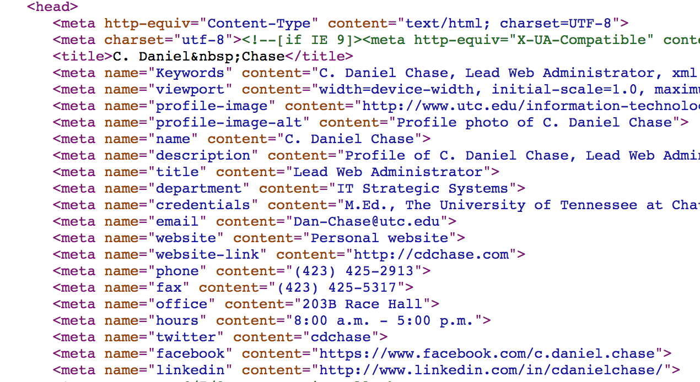

<section>
<h2>Integrating into Website</h2>

<ul>
    <li>Every page should have search form!</li>
    <li>Customize page content to improve search (SEO)</li>
    <li>Add standard description & keyword meta tags</li>
    <li>Add custom meta tags</li>
</ul>
</section>

        <section>
            <h2><a href="http://www.google.com/support/enterprise/static/gsa/docs/admin/72/gsa_doc_set/xml_reference/request_format.html#1089494">Custom Meta Tags</a></h2>
            
        </section>
